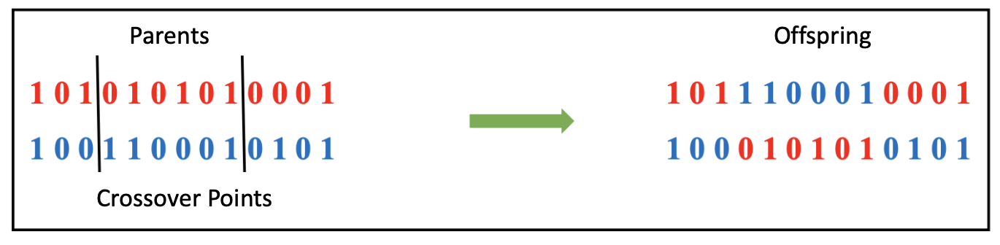

Recombination Operators
Recombination (crossover) is a fundamental genetic algorithm operator that combines the genetic information of two parents to generate new offspring. The choice of a recombination operator depends on the chromosome representation (binary, real-valued, or permutation-based) and the nature of the optimization problem.
Understanding Recombination
Recombination operators promote diversity and exploration in the solution space. They allow offspring to inherit traits from both parents, which can lead to better solutions over generations.
Below are some common recombination techniques used in genetic algorithms:
Binary Chromosomes: Techniques like One-Point Crossover and Uniform Crossover are well-suited for binary representations, where each gene is a bit (0 or 1).
Real-Valued Chromosomes: Methods such as Byte One Point Crossover, Arithmetic Crossover and BLX-Alpha Crossover facilitate exploration in continuous domains.
Permutation-Based Chromosomes: Operators like PMX (Partially Matched Crossover) ensure valid offspring while preserving order relationships in sequencing problems.
Recombination Examples
One-Point Crossover
One-Point Crossover is one of the simplest and most widely used techniques for binary chromosomes. A random crossover point is selected, and segments from the parents are swapped to create offspring.
{kind=link}
Figure 1: An example of One-Point Crossover.
Two-Point Crossover
Two-Point Crossover extends the idea of One-Point Crossover by selecting two random crossover points. The segment between the two points is swapped between the parents, producing offspring with potentially more diverse genetic combinations.
{kind=link}
Figure 2: An example of Two-Point Crossover.
Uniform Crossover
In Uniform Crossover, a mask composed of bits is determined over the length of the chromosome. These bits, which take the value 0 or 1, specify which parent the gene for the offspring will be chosen from. Bits with the value 1 are distributed uniformly with a probability of 0.5.
For example, as illustrated below, bits in the mask with a 0 value indicate that the gene will be selected from Parent X, while bits with a 1 value indicate that the gene will be selected from Parent Y. The reverse process is applied to produce the second offspring.

Figure 3: An example of Uniform Crossover.
API References
The following sections provide detailed documentation for the recombination operators available in the pycellga.recombination package.